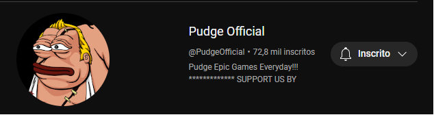
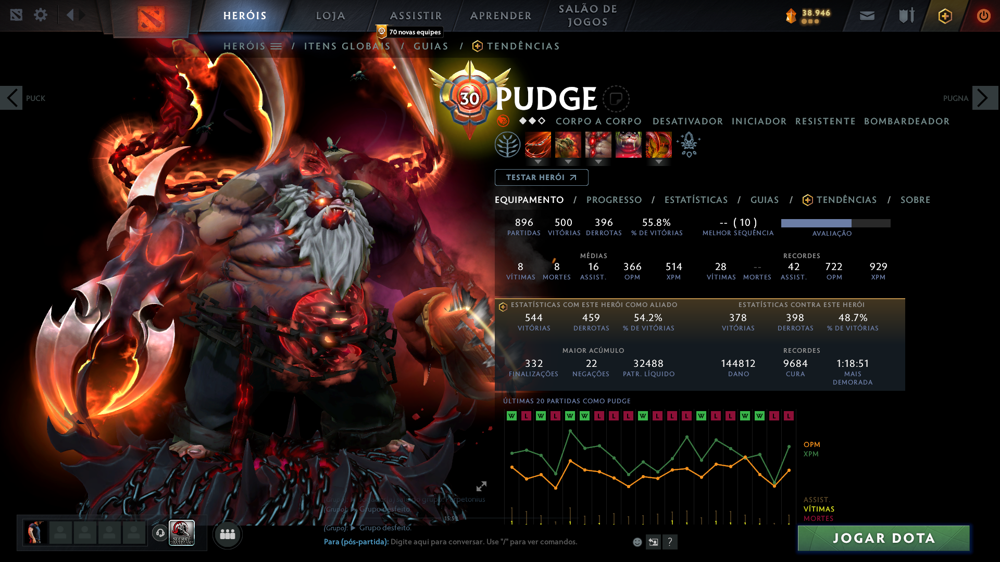

Guilherme Augusto
Cidade: Goiânia
Telefone: (62)99419-5243
Objetivo
Ser o melhor jogador de Pudge do Dota 2
Formação
Graduação em intentional feed
Academia do R4t0 D0t0
Pós-graduação em miss hook
Dr. Mersão de aegis
Experiência
 Produtor de conteúdo - Pudge Official
Aprender jogadas insanas de pudge com os mais habilidosos jogadores do mundo
 Conta Pessoal - DotaBuff
Várias horas jogadas com o melhor herói, chegando ao lvl máximo
Habilidades
- Sair da base com tango e bota
- Brigar pela bounty rune do início do game
- Esperar na fog perto da torre pra tentar hookar
- Descer o cacete no suporte inimigo e tirar da lane
- Negar o maguinho
- Ficar de olho nas outras lanes pra dar tp
- Rushar Botinha marrom, Vanguard e ir direto pra Aghs
- Digitar "GGEZ" no chat global
- Marcar suporte e no fim carregar